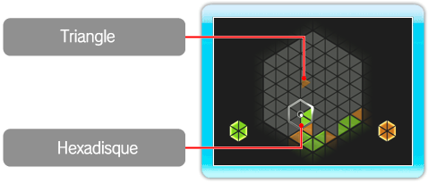
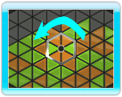
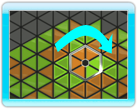
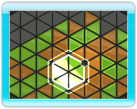

● Qu’est-ce que ROTOHEX?
ROTOHEX est un jeu de puzzles qui se joue sur un plateau hexagonal.
Utilisez l’hexadisque (curseur) pour essayer de former des hexagones de même couleur en déplaçant les triangles qui tombent.
Avec la pratique, vous trouverez instinctivement le moment propice pour faire pivoter l’hexadisque!

● Comment former un hexagone (HEX)
Des triangles de couleurs différentes tombent sur le plateau.
Un hexagone est créé quand l’hexadisque contient six triangles de même couleur.
Pour ce faire, déplacez l’hexadisque n’importe où sur le plateau et faites-le pivoter vers la gauche ou vers la droite.
Les règles du jeu et l’objectif sont communs à tous les modes: créer des hexagones pour les faire disparaître.
Si le plateau est complètement rempli, la partie se termine (voir "9. Comment jouer").
|  |
 |
 |
|
 |
● Modes de jeu
Ce jeu comprend quatre modes: mode SOLO, mode VS, mode ENDLESS et mode SPRINT (voir "7. Commencer").
Les règles du jeu et l’objectif sont communs à tous les modes: créer des hexagones pour les faire disparaître.
Si le plateau est complètement rempli, la partie se termine (voir "9. Comment jouer").
Dans ces quatre modes, deux joueurs peuvent jouer simultanément.
Les joueurs s’entraident pour former des HEX de couleur identique sur le même plateau de jeu dans les modes SOLO,
ENDLESS et SPRINT. Dans le mode VS, ils sont opposés l’un à l’autre.
Note: ENDLESS et SPRINT sont disponibles une fois que certaines conditions ont été remplies dans le mode SOLO.